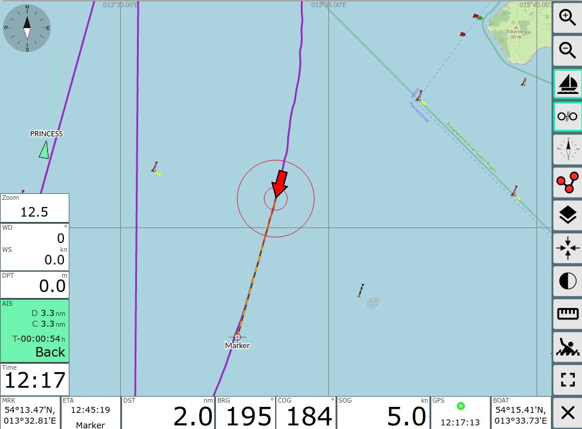
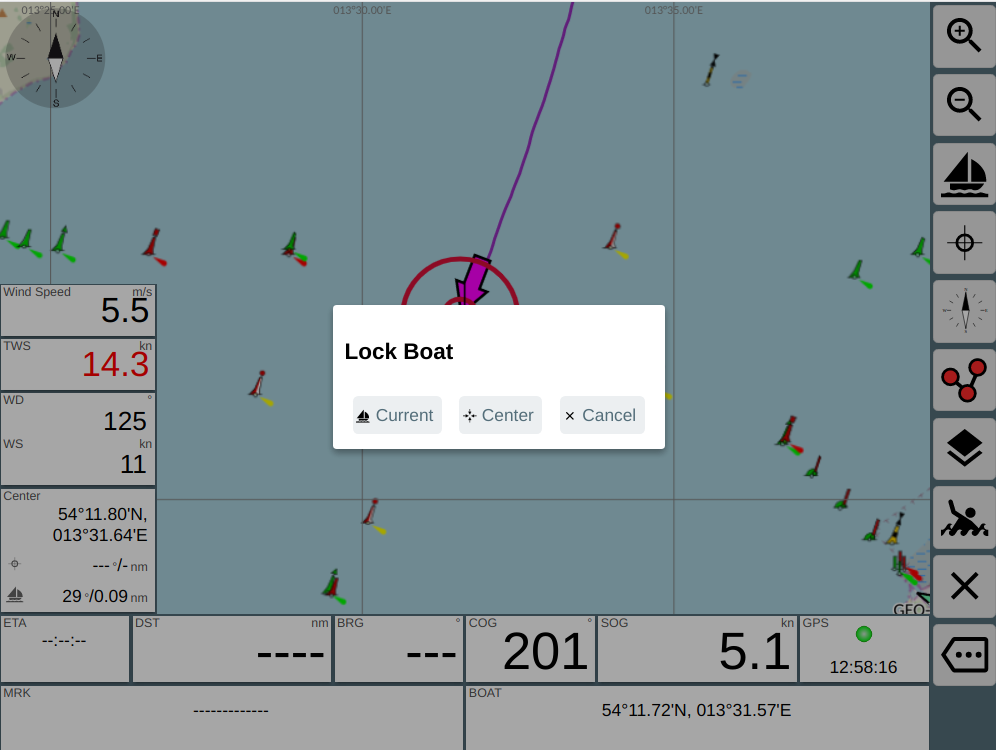
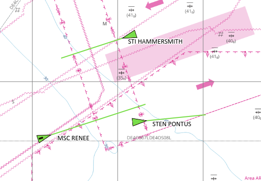
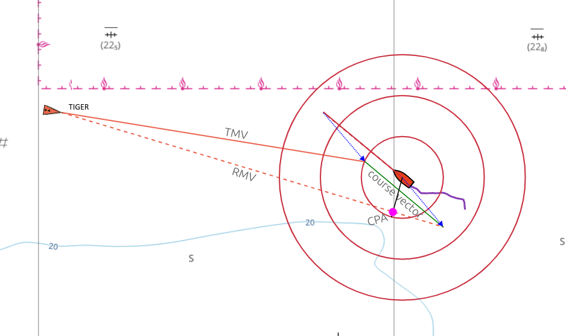
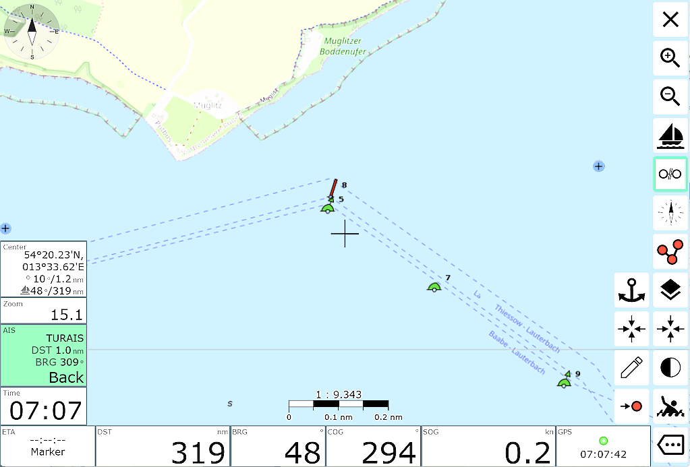
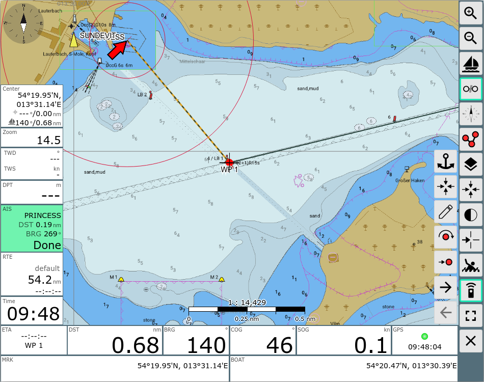
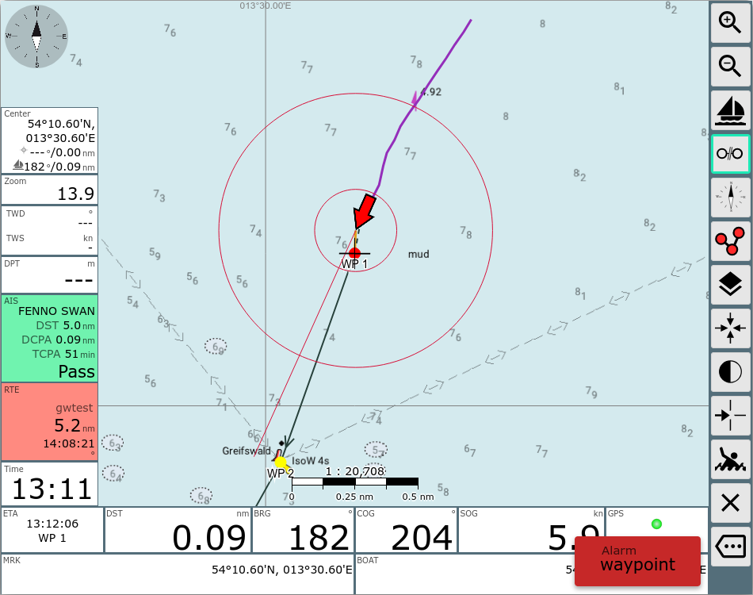

The Navigation Page
This page is the one normally used for navigation. In the screenshot an
active waypoint is shown and the chart is locked to the boat position
(i.e. will move with the boat).

Buttons
| Icon |
Name |
Funktion |

|
ZoomIn |
Zoom in |

|
ZoomOut
|
Zoom out
|

|
LockPos
|
lock the chart center to the boat position
can only be activated if there is a valid position
|

|
StopNav
|
stop the navigation
only visible if a waypoint or route is active
|

|
LockMarker
|
start waypoint navigation.
the center of the chart (cross) will become the target waypoint.
only visible if there is no active route or waypoint
|

|
CourseUp
|
rotate chart - course forward will be at top
|

|
ShowRoutePanel
|
switch to route editor (also by
clicking on the route display if there is any)
|

|
MOB
|
man over board (see main page)
|

|
FullScreen |
Fullscreen on/off (supported browsers only) |

|
Measure |
set a marker at the current map center and show a line to the
center together with course and distance (also in the "center
Display" widget) - measure tool |

|
Overflow
|
Display a second button list if the screen is too small to fit all
buttons. Only visible if you did not select "2 button columns" at
Settings/Layout.
|

|
NavOverlays |
Activate or Deactivate Overlays |

|
Night |
Activate/Deactivate of the night mode (since 20210619, if
Settings/Buttons/night mode on navpage is enabled) |

|
GpsCenter |
Center map to boat position (since 20210619) |

|
Dim
|
Dim Mode. The screen will be dimmed and all buttons become
inactive. Leave this state by clicking anywhere on the screen.
This button is only visible in the Android app or when using the BonjourBrowser
(version 1.5 and above).
This button really dims the complete screen. This way you can limit
the power consumption of your device if you do not need an instant
display. It can also prevent overheating when running on high
brightness and on high temperatures.
|

|
RemoteChannel |
selection of the remote
control channel and mode (send/receive). |

|
Cancel |
back to main page
|
This is the navigation view. In the middle there is the chart display
with the boat position (red arrow). The yellow and green symbols are the
AIS targets in vicinity (10nm, can be changed in settings) together with
their current course as well as name or MMSI. The orange line indicates
the course towards the current target waypoint. The dotted line show the
original course from the start of navigation to the target waypoint. You
can move and zoom the chart with the normal gestures. For zooming you can
also use the buttons +/- on the right side.
You can have up to 3 Navigation Circles being drawn around the boat to be
able to estimate distances. You can change them via
settings->navigation display. Standard values are 300m and 1000m.
(since 202011xx) The length of the line indicating your current
course ("Course Vector") can be adapted in the settings
(Navigation/Boat Course Vector Length). You will set the seconds and the
length will be computed using your current boat speed (default: 10
minutes). The width of this line is controlled by the width for the
Navigation Circles.
The same settings also apply to the course vectors of AIS targets.
For the boat direction and the course vectors you can select various
modes (since 20220421) - you can choose at settings->navigation->boat
direction (see the GitHub
discussion):
| Setting |
Meaning |
Symbol-Name |
| cog |
boat direction and course vector COG |
boatImage (arrow) |
| hdt |
boat direction based on Heading True (fallback to COG if not
available), course vector based on COG. Optionally HDT as dotted
line(settings->navigation->add dashed vector for hdt/hdm) |
boatImageHdg
(Boat) |
| hdm |
boat direction based on Heading Magnetic (fallback to COG if not
available), course vector based on COG. Optional HDM as dotted
line(settings->navigation->add dashed vector for hdt/hdm) |
boatImageHdg
(Boat) |
In the settings you can additionally activate a "no boat movement"
detection.(settings->navigation->zero
SOG detect). If this is activated and the boat speed (SOG) drops below 0.2
kn (settings->navigation->zero SOG
detect below (kn)) the boat symbol will change to a red circle
(boatImageSteady).
Lock Mode
If the chart is locked to the boat position (like in the picture) it will
always keep the boat in the center of the screen and move the map
accordingly.
Since version 20230614 you can allow (settings/Map "allow move when locked")
to move the map when locked.
When you finish moving the map the boat will be held at the current position
on the screen.
But it will be ensured that the boat at least is visible.
Since version 20210619 you can lock the boat position to any place on the
screen even initially. You need to set (Settings/Map/boat lock mode)
either "current" or "ask" .
With "current" you will keep the boat at the point at the screen where it
is when you "lock".
With "ask" there will be a dialog at every "Lock" :

AIS Target Display
AvNav shows AIS Targets up to a configured distance to the current vessel
posiion.
The display includes some information about the target (configure it at
the settings page, AIS) and some motion
vectors that show the movement of the AIS target.
AIS target symbols can be replaced by user
defined symbols - optionally different ones depending on the AIS
shiptype. For the own boat and optionally for each AIS target a course
vector points to the position to be reached within a defined time interval
(default: 10 minutes).
Since 20230614 AIS atons will also be displayed (you need to have settings/AIS
"only show moving targets" switched off and "show other" switched on). For
each AIS target you can display an estimated position depending on the age
of the received information, course and speed (settings/AIS "show
estimated position").
You can select if an AIS target should be rotated by its HDG (if received
- settings/AIS "use heading for direction") - otherwise COG will be used.
The course vector of an AIS target will always be rotated by COG.
There are different symbols for AIS targets - for details refer to "user
defined icons".
If you enable this in the setting the targets will also show an estimated
position (shadow) based on the age of the AIS information.
By clicking an AIS target (or the "next AIS" display) you will be shown
all information for this target and you
can change to the list of all AIS targets.
AIS Motion Vectors
A basic introduction to the topic of true and relative motion vectors and
how they are used in navigation can be found at
True motion vectors
AvNav displays the estimated track over ground for AIS targets if settings->AIS->use-course-vector
is activated. A line is drawn from the last known position of the target
in the direction of the course over ground (COG) of the target with the
length of the course over ground (SOG) multiplied by
boat-course-vector-length. This line is the so-called true motion
vector, or TMV for short.

Relative motion vectors (since 20240520)
In addition, relative motion vectors can be displayed in AvNav.
To enable this, set a value greater than zero in settings->AIS->relative-motion-vector-range,
then RMVs are also displayed as dashed lines for targets that are within
this distance.

The RMV shows the movement of the target relative to the own
ship, it results as the difference between TMV and the own course vector,
so that TMV, RMV and the own course vector form a triangle. If the RMV of
a target points directly at your own ship, there is a risk of collision.
The position of the CPA can also be read directly from the RMV; the
crossing of a line perpendicular to the RMV going through your own ship
with the RMV.
The RMVs correspond to the tracks that the targets would leave on a radar
screen.
Curved vectors (since 20240520)
If you activate settings->AIS->curved-vectors,
a rate-of-turn (ROT) present in the AIS data is evaluated and the rotation
of the target is taken into account when displaying the vectors. The TMVs
and RMVs are then displayed as curved lines. The curved vectors may
indicate a potential collision much earlier than the uncurved vectors.

Displays (Widgets)
At the left side you have (top down):
- current chart zoom, preferred zoom factor in brackets if auto zoom
activated
- the closest AIS target (green), turning red on AIS warning or the
selected AIS target (yellow)
- current time
The display of the closest AIS target will turn red if expected CPA is
closer than 500m (can be changed in settings). If the display is yellow it
does not show the nearest target but a different one selected on the ais
info page. If you click on this display you move to the ais info
page.
(since 202011xx) The icons used for your boat and the AIS targets can be
changed using a file images.json.
Additionally you can scale the AIS symbols (AIS/Icon Scale) and you can
define a border(AIS/Border Width). You can also switch off AIS/AIS Use
Course Vector, if your browser is too much slowed down by the computation
and drawing of the AIS course vectors.
The most important instrument data are shown at the bottom of the
navigation page. At the left, data for currently active waypoint (if any)
are displayed
- Position
- ETA
- Course
- Distance (nm)
On the right the boat data:
- Course
- SOG (kn)
- Position
- local time from GPS
- GPS indicator: green - gps data ok, red: no gps data
Depending on display width and font size setting (widget font size) you
will have 2 rows of data (you can change this in settings at "2 widget
rows"). Items that do not fit anymore will be hidden completely.
You can set up averaging (settings->navigation) for the boat data
(position, course, speed). If turned on the captions at the displays will
turn red.
All display can be adapted with the layout
editor.
If you click on the lower right displays you will be taken to the dashboard.
Clicking on the lower
left displays will bring up a couple of additional waypoint buttons.

| Icon |
Name |
Function |

|
AnchorWatch |
switch on anchor watch (see dashboard) |
|
WpLocate |
move chart center to waypoint |

|
WpEdit |
edit waypoint
you can change the waypoint's name and position in the dialog |

|
WpGoto |
start navigation to this waypoint
only visible if there is no active route |
|
NavRestart |
restart navigation to the current waypoint. This especially sets a
new course and restarts the XTE computation.
Will only be visible if a navigation is active currently. |
If a route is active, the waypoint buttons will change slightly.

The additional buttons
| Icon |
Name |
Function |

|
NavNext |
start navigation to the next waypoint of the current route |

|
WpNext |
center chart to next waypoint |

|
WpPrevious |
center chart to previous waypoint |
|
NavRestart |
restart navigation to the current waypoint. This especially sets a
new course and restarts the XTE computation.
Will only be visible if a navigation is active currently. |
If a route is active there will be a display for the route data on the
left side (name, remaining distance, ETA).
In routing mode the next target waypoint will be activated automatically
if the following conditions are met:
- the boat is within the approach radius to the current target
waypoint (default 200m - settings->route->approach)
- the second condition depending on the selected mode is met
(early/90/late) - see Next
Waypoint Handling
In approach to the waypoint the display of the route parameters will
turn red and the course to the next waypoint will be shown additionally.
Additionally a waypoint alarm is triggered.
If next waypoint is not activated automatically (e.g. because you are too
far), you can click on the waypoint data and use the button to set the next waypoint as target.

Special Functions
Simple Waypoint Navigation
Steps:
- Unlock Chart (if on)
- Stop Nav
- Move chart until your target is below the center (cross), use zoom if
necessary
- LockMarker (start navigation)
- Lock Chart
Bearings
If a waypoint is active and the chart is not locked to the boat position
you have a "Center" display at the left side. This shows the center
position, the course and distance from the boat to the center and from the
waypoint to the center. For a simple bearing just move the chart center
(cross) to the bearing target and read the bearing from the "Center"
display.
Feature Info
When clicking on the map a feature info dialog will pop up. Within this
dialog you also have a button to immediately start a navigation to the
clicked point.
To start a route - change with to the route
editor.